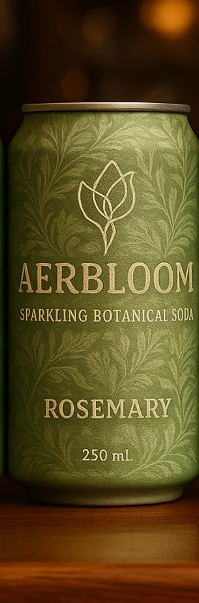
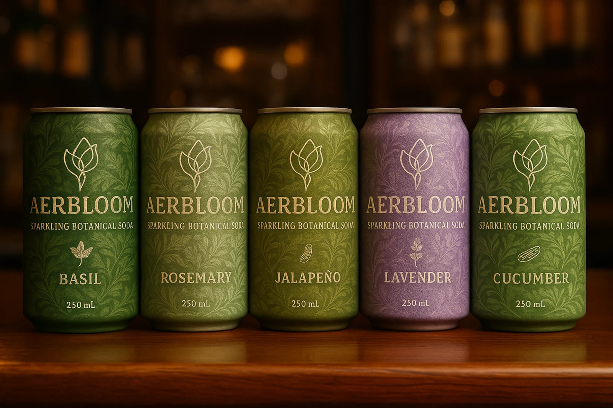

Taste architecture
What defines Rosemary
Rosemary is designed to feel precise and composed, offering herbal character without turning medicinal or sharp.
- Resinous rosemary aromatics
- Dry citrus zest
- Savory herbal tension
- Clean structured finish
Collection flavor
Resinous, dry, and citrus-zesty, with aromatic depth and a quietly structured finish.
Rosemary expresses the more architectural side of the Aerbloom line. It brings savory herbal definition, subtle citrus zest, and a dry sparkling frame that feels poised rather than loud. In the collection, Rosemary represents structure and aromatic depth — a flavor built for evening service, contemplative sipping, and elegant highball culture.

Taste architecture
Rosemary is designed to feel precise and composed, offering herbal character without turning medicinal or sharp.
Serve moments
Rosemary is the range’s most architectural flavor — especially strong anywhere a bar program, dinner table, or slow evening ritual needs something quietly distinctive.
Flavor notes
The opening impression is aromatic and evergreen, giving the flavor a sculpted, savory identity.
Rosemary is intentionally restrained, allowing the sparkling structure to stay focused and elegant.
A small bright note keeps the flavor vivid and prevents the herbals from feeling dense.
The aftertaste is calm, dry, and memorable rather than sweet.
Occasions
An ideal pre-dinner pour for guests who want something nuanced without alcohol.
A natural match for lighter whiskies and aromatic highballs.
Its dry, savory profile gives the line greater depth and sophistication on shelf.

Part of a system
Every Aerbloom flavor shares the same brand philosophy: natural sophistication, balanced refreshment, and a can design that feels more like an object of taste than a conventional soft drink. Together, the line is designed for bars, hotels, premium retail, and everyday rituals of mindful refreshment.
Explore more